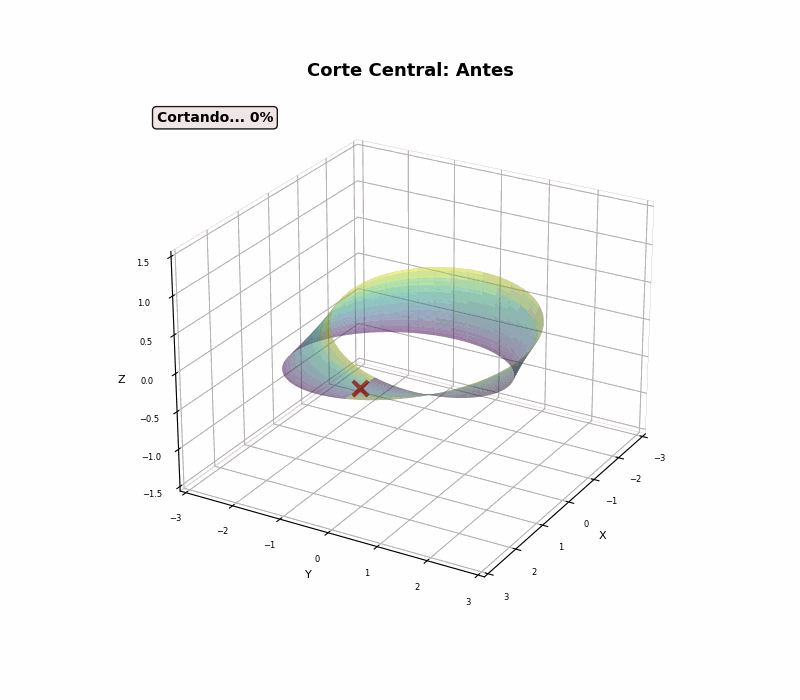
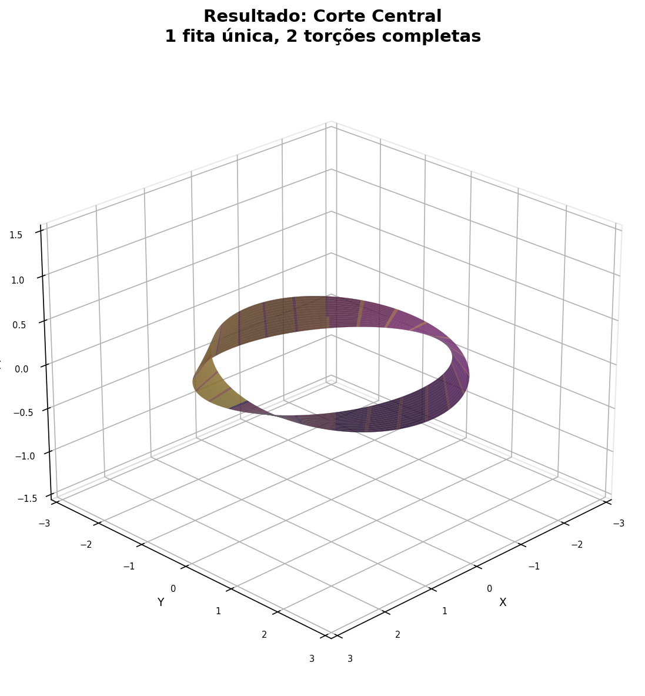
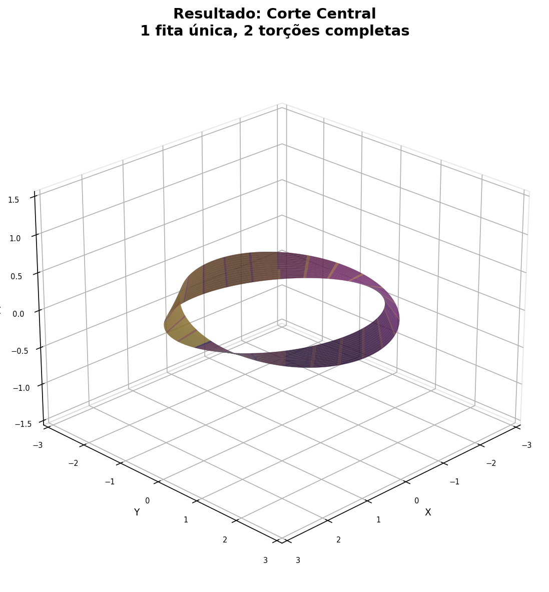

EXPERIMENTO A
Corte Central (1/2 da Largura)
Corte a fita exatamente no meio. O resultado desafia a intuicao.

Animacao do corte central: a tesoura percorre o centro da fita e... NAO separa!
Resultado: 1 Fita Unica Maior
A fita de Mobius NAO se divide em duas pecas! Ela se torna uma unica fita com o dobro do comprimento e 2 torcoes completas (4 meias-torcoes).
| Propriedade | Antes | Depois |
|---|---|---|
| Pecas | 1 | 1 (nao separa!) |
| Comprimento | L | 2L |
| Largura | W | W/2 |
| Meias-torcoes | 1 | 4 |
| Orientavel? | NAO | SIM |
| Bordas | 1 | 2 |
M(1 meia-torcao) --[corte 1/2]--> S(4 meias-torcoes, 2L)
Isso acontece porque a linha central percorre a fita DUAS VEZES antes de se fechar (devido a meia-torcao). O resultado e uma unica fita orientavel.
 
